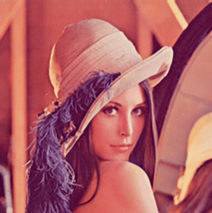
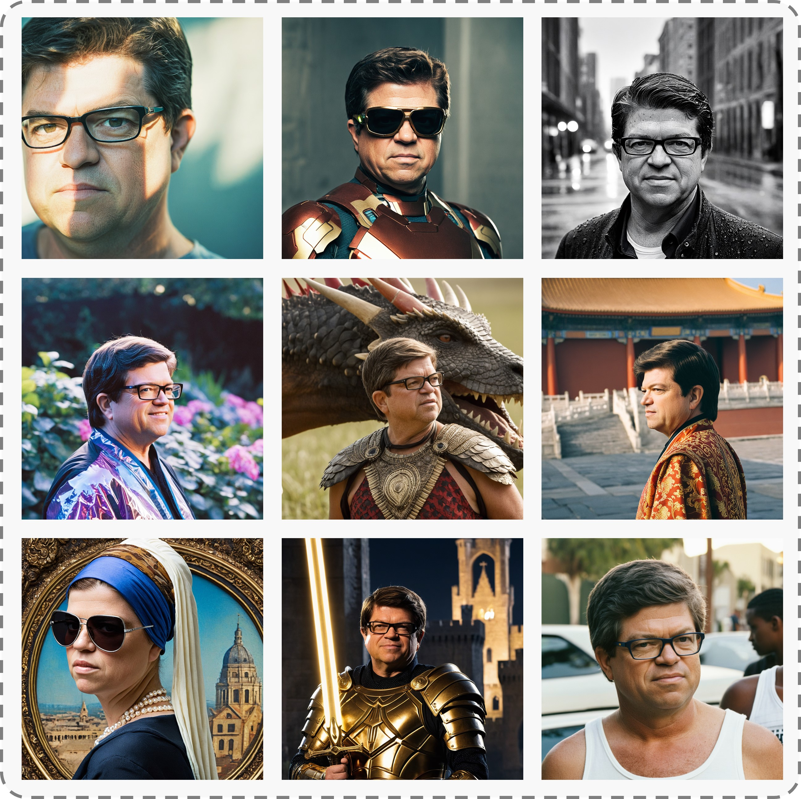
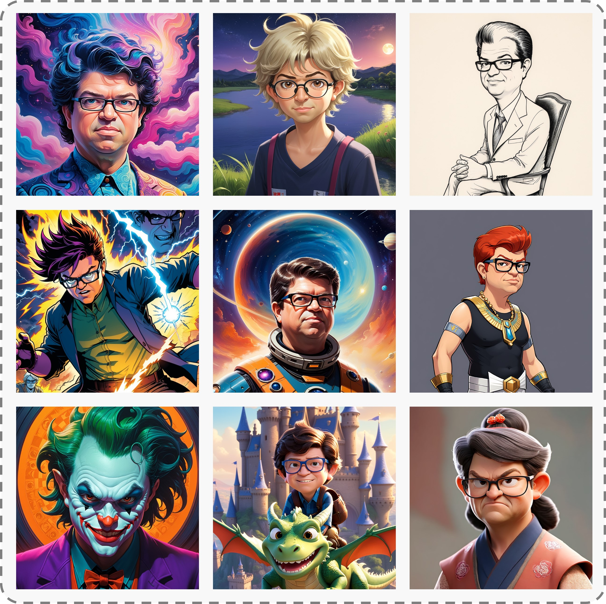
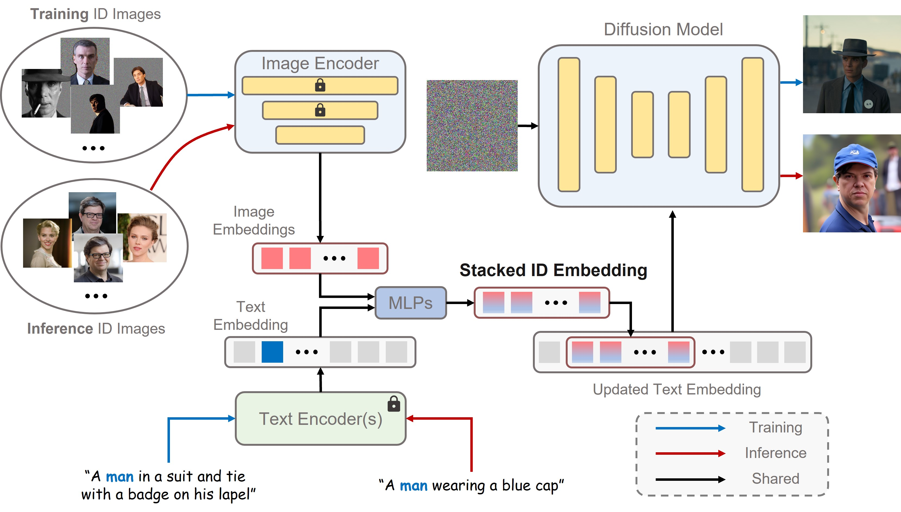
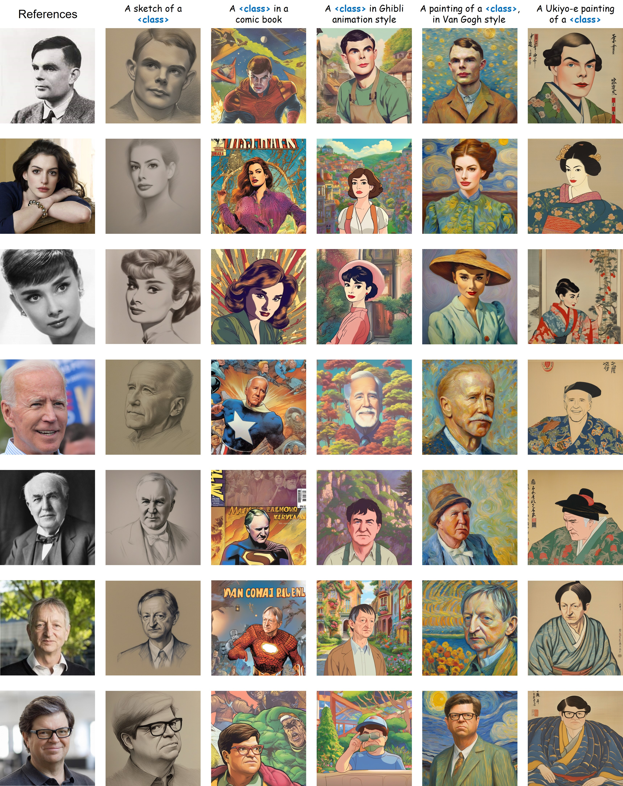
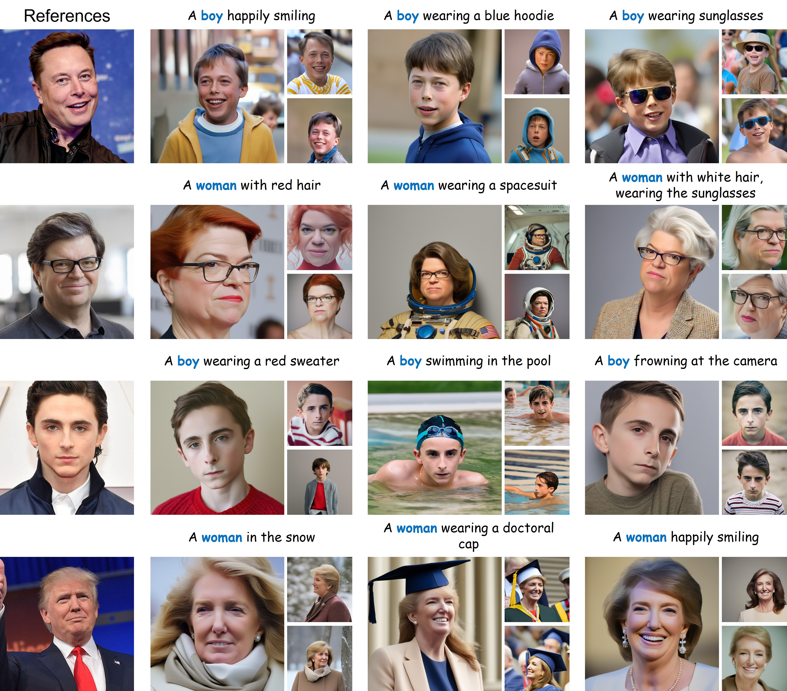
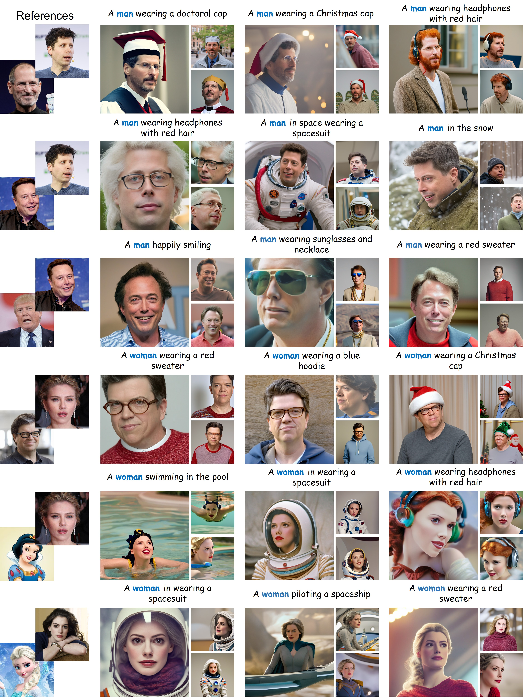
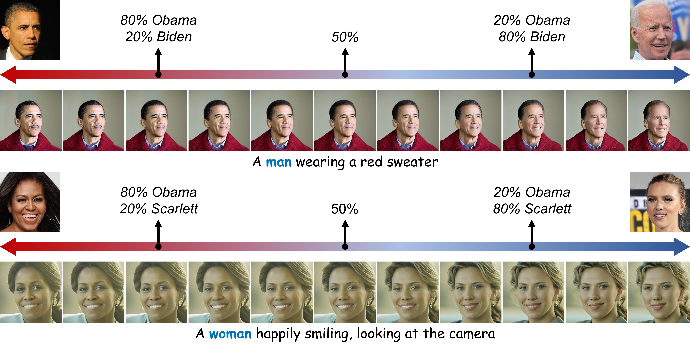
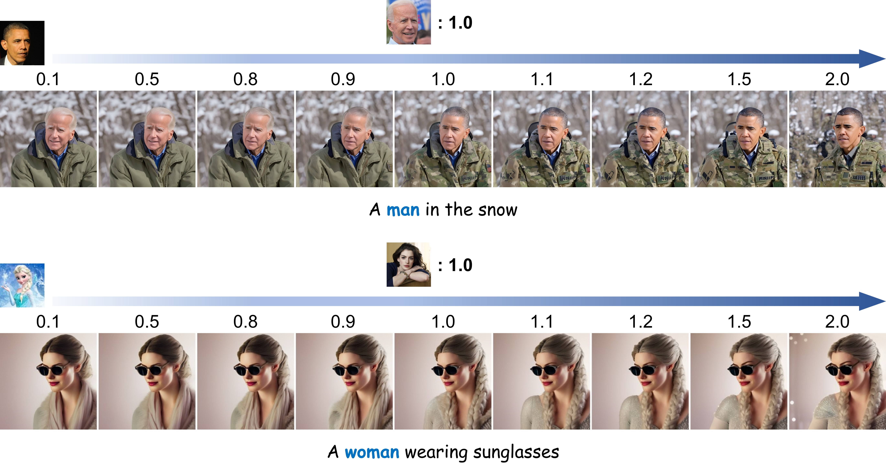

Select to browse the personalization results. The first row is the reference ID image.


Stylization
Select to browse the personalization results. The first row is the reference ID image.

Abstract
Recent advances in text-to-image generation have made remarkable progress in synthesizing realistic human photos conditioned on given text prompts.
However, existing personalized generation methods cannot simultaneously satisfy the requirements of high efficiency, promising identity (ID) fidelity, and flexible text controllability.
In this work, we introduce PhotoMaker, an efficient personalized text-to-image generation method, which mainly encodes an arbitrary number of input ID images into a stack ID embedding for preserving ID information.
Such an embedding, serving as a unified ID representation, can not only encapsulate the characteristics of the same input ID comprehensively, but also accommodate the characteristics of different IDs for subsequent integration.
This paves the way for more intriguing and practically valuable applications.
Besides, to drive the training of our PhotoMaker, we propose an ID-oriented data construction pipeline to assemble the training data.
Under the nourishment of the dataset constructed through the proposed pipeline,
our PhotoMaker demonstrates better ID preservation ability than test-time fine-tuning based methods, yet provides significant speed improvements, high-quality generation results, strong generalization capabilities, and a wide range of applications.
Method
Our method transforms a few input images of the same identity into a stacked ID embedding.
This embedding can be regarded as a unified representation of the ID to be generated.
During the inference stage, the images constituting the stacked ID embedding can originate from different IDs.
We then can synthesize the customized ID in difference contexts.

We first obtain the text embedding and image embeddings from text encoder(s) and image encoder, respectively.
Then, we extract the fused embedding by merging the corresponding class embedding (e.g., man and woman) and each image embedding.
Next, we concatenate all fused embeddings along the length dimension to form the stacked ID embedding.
Finally, we feed the stacked ID embedding to all cross-attention layers for adaptively merging the ID content in the diffusion model.
Note that although we use images of the same ID with the masked background during training, we can directly input images of different IDs without background distortion to create a new ID during inference.
We leave the discussions about ID-oriented data construction pipeline in our paper.
Recontextualization
We demonstrate the generation capabilities of our PhotoMaker under basic prompts.
We display the conditioning prompts below each image.
Bringing a person in artwork/old photo into reality
By
taking artistic paintings, sculptures, or old photos of a person
as input, our PhotoMaker can bring a person from the last century or even ancient times to the present century to
“take” photos for them. We display the conditioning prompts below each image.
Stylization
Our PhotoMaker not only possesses the capability to generate realistic
human photos, but it also allows for stylization while
preserving ID attributes. We display the conditioning prompts at the first row.

Changing Age or Gender
By simply replacing class words (e.g., man and woman), our method can achieve changes
in gender and age while maintaining the original identity.

Identity Mixing
If the users provide images of different
IDs as input, our PhotoMaker can well integrate the characteristics
of different IDs to form a new ID.

For identity mixing, our method can adjust the merge ratio by either
controlling the percentage of identity images within the input
image pool or through the method of prompt weighting.
We first show that how our method
customizes a new ID by controlling the proportion of different
IDs in the input image pool.

We then multiply the embedding corresponding to the images
related to a specific ID by a coefficient to control its proportion
of integration into the new ID.

Comparisons
Compared to other methods, our PhotoMaker can simultaneously satisfy high-quality and diverse
generation capabilities, promising editability, high inference efficiency, and strong ID fidelity.
More comparison results can be found in our paper.
We display the conditioning prompts at the second column.
BibTex
@inproceedings{li2023photomaker,
title={PhotoMaker: Customizing Realistic Human Photos via Stacked ID Embedding},
author={Li, Zhen and Cao, Mingdeng and Wang, Xintao and Qi, Zhongang and Cheng, Ming-Ming and Shan, Ying},
booktitle={IEEE Conference on Computer Vision and Pattern Recognition (CVPR)},
year={2024}
}